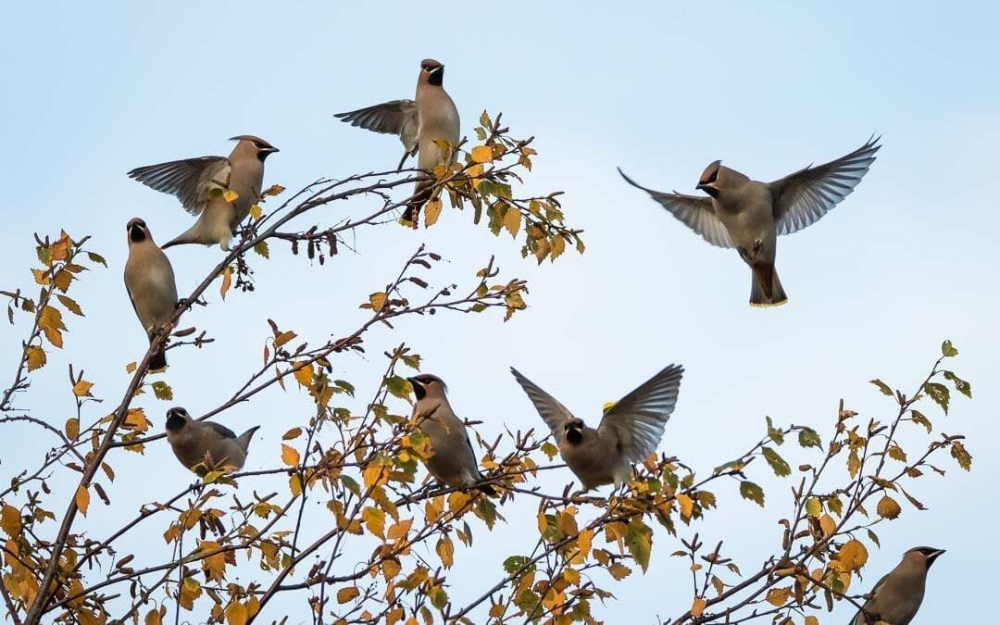
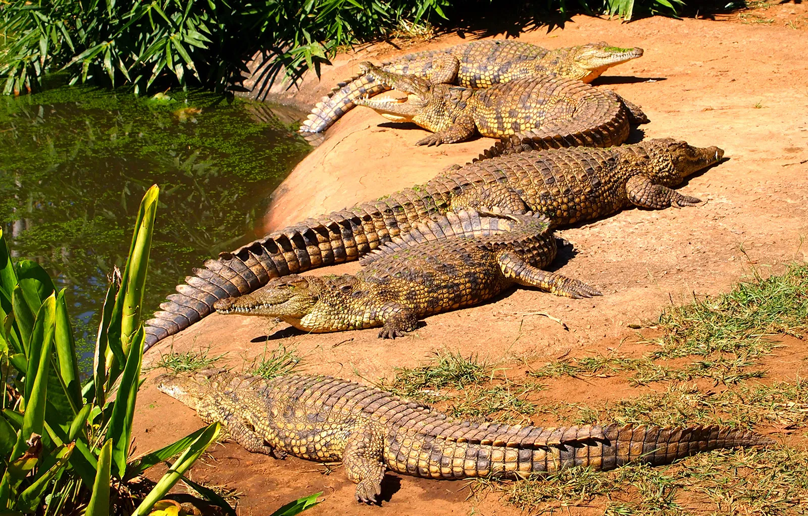
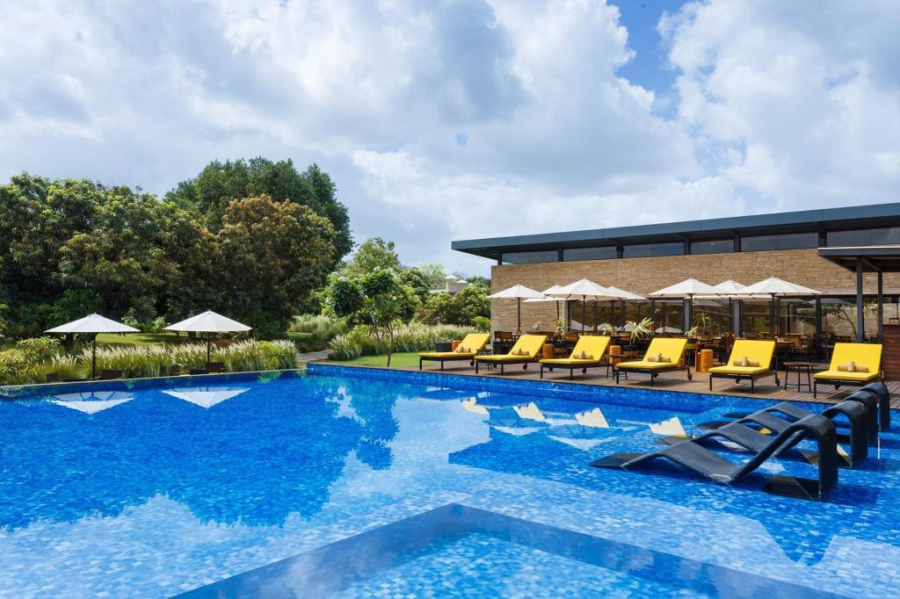
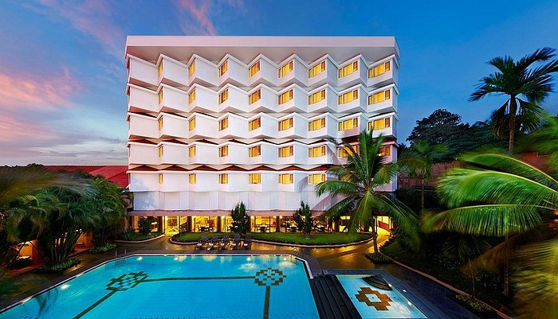
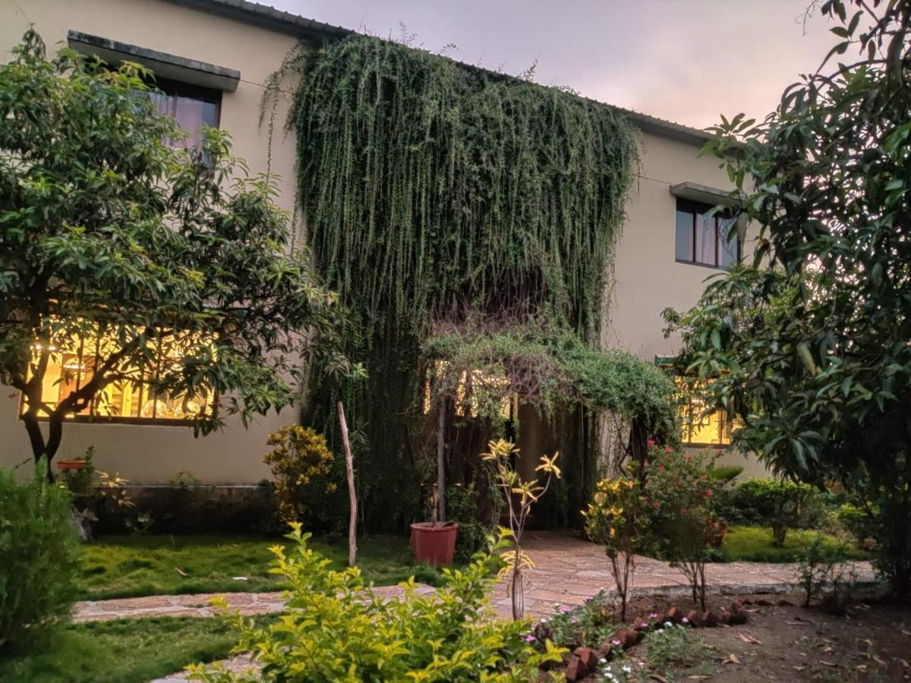
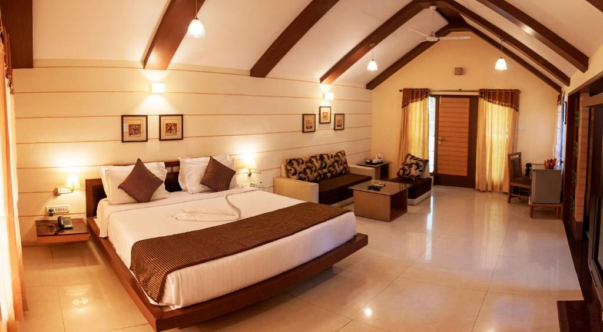

Welcome to Sasan Gir National Park
Gir National Park is the only place in the world outside Africa where a lion can be seen in its
natural habitat. The lions of Gir are a majestic animal, averaging 2.75 metres in length, and with a bigger
tail
tassle, bushier elbow tufs and prominent belly folds than his African cousin which has larger mane. Gir is a
home to 40 species of mammals and 425 species of birds.
We all know, Gir is the only natural habitat of world popular Asiatic Lions. Where our tailor made Gir Wild
Life
Tour Package gives you an unparalleled opportunity to watch those rare Asiatic Lions coupled with thousands
of
other elusive wild animals and hard-to-find birds like uncommon Asiatic wild ass, hyenas, Gir foxes, pygmy
woodpecker, brown fish owl and black buck etc, it will make sure that you receive the highest standards of
luxury, comfort and travel. Additionally, all this is available at very competitive rates.
The Sasan Gir National Park is an esteemed wildlife destination in India which has attained an
immense popularity among vivid travelers, wildlife lovers, photographers, nature enthusiasts,
researchers
and
hunters. Being the only destination to spot the Asiatic Lions in India, it keeps on attracting large
number
of
travelers from several parts of the world and
Under the guidance of our expert guides you will have surely a life time experience or everyone looking
to
fulfill their wildlife fantasies across one of most renowned wildlife sanctuary of India, we offer Gir
Wild
Life
Tour Package.
Gir National Park : The Majestic Home Of The Royal King :
Besides Africa, Gir National Park in Gujarat is the only place in the world where you can spot
lions
roaming free in the wild. The real discovery channel of India is situated approximately 65 Kms South
East of
Junagarh District. The Government notified the large geographical extent of Sasan Gir as wildlife
sanctuary
on
18th September, 1965 in order to conserve the Asiatic Lion. It covers total area of 1412 square
kilometers
of
which 258 Km forms the core area of the National Park. Indiscriminate hunting by the people of Junagarh
led
to
their decrease in population drastically, while they were completely wiped out from the other parts of
Asia.
It
was the kind effort of Nawabs of Junagarh who protected the queen royalty in his own private hunting
grounds.
Later in due course of time Department of Forest Officials came forward to protect the world’s most
threatened
species. From a population of approximately 20 lions in 1913, they have risen to a comfortable 523
according
to
2015 census. There are 106 male, 201 female and 213 sub-adult lions in the wilderness of these four
districts.
Subtle Glimpses Of Major Attractions At Sasan Gir :
Animals
The entire forest area of the Gir National Park is dry and
deciduous
which provides best habitat for Asiatic Lions. As per the new statics of 2015, the entire Saurashtra
Region
is inhabited by 523 Lions and more than 300 Leopards. Apart from these two animals the park is a home to
two
different species of Deer. The Sambar is counted largest Indian Deer. The Gir forest is also known for
the
Chowsingha – the world’s only four horned antelope. The Jackal, striped Hyena and India Fox are some of
the
smaller carnivores found in Gir Forest.

Birds
The exotic flora of Gir National Park gives shelter to more than 425
species of birds and moreover the sanctuary has been declared an important bird area by the Indian Bird
Conservation Network. Gir is also habitat of raptors like critically endangered white-backed and
long-billed vulture, the Egyptian Vulture, the vulnerable Greater spotted Eagle and the endangered
Palla’s Fish Eagle. The crested Serpent Eagle, the Changeable Hawk Eagle and other Birds of prey breed
in the forests of Gir. Birds usually can be spotted while driving around Gir are the Asian Paradise
Flycatcher, the Red-breasted Flycatcher, the Fantail etc.

Reptiles
Sasan Gir is blessed with more than 40 species of reptiles
and
amphibians. Kamleshwar – a large reservoir in the sanctuary is the best spot where Marsh Crocodile can
be seen in large numbers. Park has even many species of snake including King Kobra, the Russell’s viper,
Saw-scaled viper and the Krait. The star tortoise and freshwater turtles could also be seen in the
sanctuary. It also has a large population of marsh crocodiles and other reptiles which include star
tortoise, soft-shelled turtle, monitor lizards and the Indian rock pythons. The crocodile hatchery at
Sasan Gir National Park is also an interesting place to see.
Bakula Region
One of the ancient forts in India, the Ranthambore Fort is
declared as the UNESCO world heritage site due to its historical significance. The fort is located
inside the Ranthambore National Park, at the distance of 13 km from the Sawai Madhopur railway station.
This heritage fort is said to be built in 944 AD and has witnessed the long history of Rajasthan. The
epitome of valor and pride of the Rajput rulers of the various Kingdoms, the Ranthambore Fort was the
strategic fort and thus captured by various rulers. At the time of the Independence of India and the
abolition of the imperial era, the fort was under the Maharaja of Jaipur and the Ranthambore.
Gir Interpretation Zone, Devaliya
Devaliya Safari Park is enclosed area of
the Sanctuary that offers a good opportunity for visitors to experience a rustic beauty and wilderness
of the area. The safari tour is conducted in a mini bus that takes visitors to another cross section of
the Gir. Travellers can watch here a good variety of wildlife in just 20 to 30 minutes tour including
Asiatic Lion. In order to reduce human interference in the main area of Gir National Park, and
facilitate tourists to better understand the importance of Gir and its varied wildlife, an
interpretation zone has been developed at Devalia.
Gir Jungle Trail Safari
Fascination is full-on in terms of keeping your wilderness alive. Gir
Jungle Trail Safari is the right choice for pampering your soul with its wilderness.
 Devalia Safari Park
Devalia Safari ParkCome across a green lavish feel where unlimited impeccability for the visitors
out here defines wilderness in reality. Get along with Asiatic lions as the place has a lot to offer.
 Kankai Safari Gir
Kankai Safari GirGir Kankai Temple Safari is most convenient for all the tourists out here. Make
your trip class apart from common and opt for the Kankai Safari.
 Birds Watching
Birds WatchingA birding sensation in the natural setting is a thrilling experience that is
nothing less than divine. Greet with gracious birds species to nurture.
Hotels & Resort in Gir National Park
Good standard hotels and resorts in the surrounding area of any wildlife sanctuary play an
important role in the
promotion of tourism in the state. In the last couple of years many new hotels and reosrts have been
established
for this specific purpose. The Gir hotels are amazing in some way, whether it is architectural design or
natural
setting. These beautiful properties are all equipped with modern luxury and amenities that is much-needed
during
tourist’s vacation. However, our extensive web portal enriched with variety of good resorts provides a
number of
these Budget hotels in Gir. We ensure obstacle free booking procedure to Gir Hotels. So once come and get
lost
in the serene ambiance of the Gir Forest.

Woods
At Sasan Resort

The Gateway Hotel

Gir
Birding Lodge

Amidhara Resort